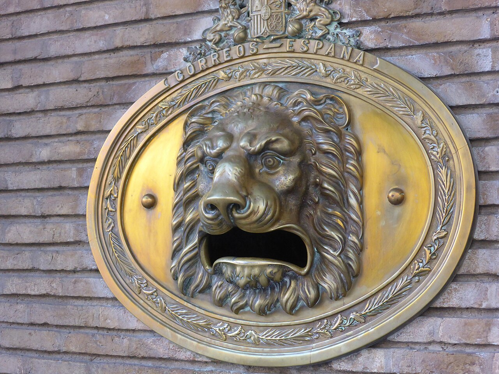

1981 – 1984
★ Proceso: clasificación
El código postal
Correos ideó en 1981 un código de cinco dígitos como sistema de clasificación automática. Desde el 1 de julio de 1984 es obligatorio escribirlo en todos los envíos.
28Provincia
0Ciudad importante o itinerario
13Área de reparto

Qué cambió
Un número sustituye a la lectura de la dirección para clasificar.
Qué necesidad atendía
Hasta entonces un empleado leía la dirección completa de cada carta. Con un número, una máquina podía separar la correspondencia sin interpretar el texto.
Resultado
Sigue siendo hoy la base de la clasificación automática de cartas y paquetes.
BOE, Orden de 23 de enero de 1984 (continuación, 16/02/1984)